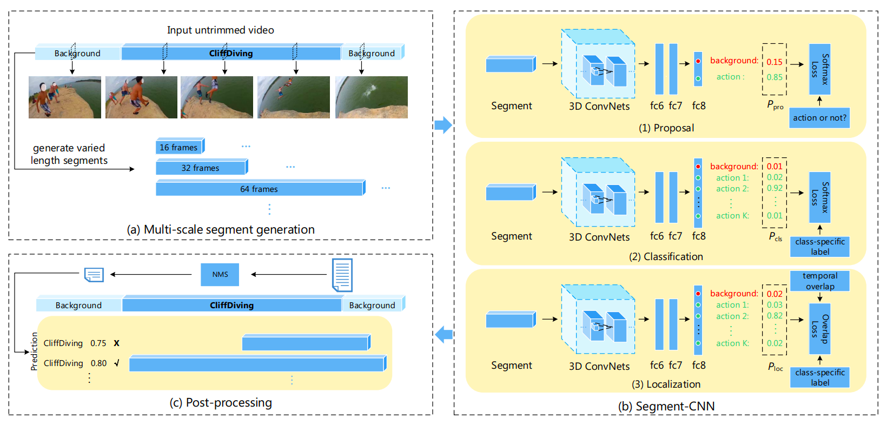
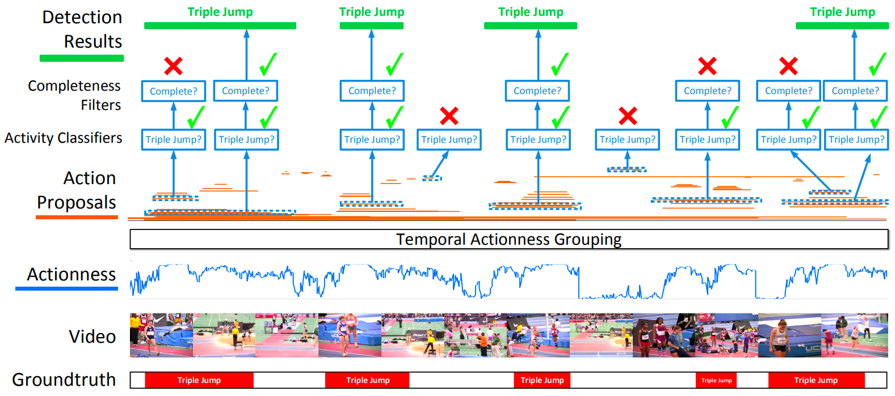
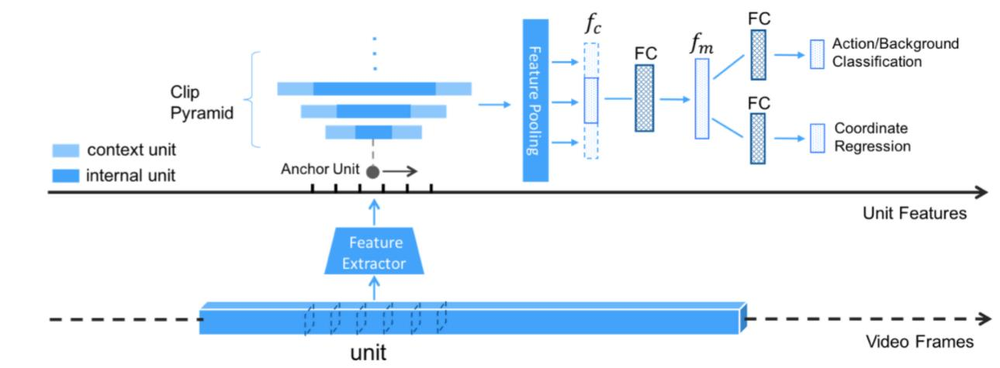
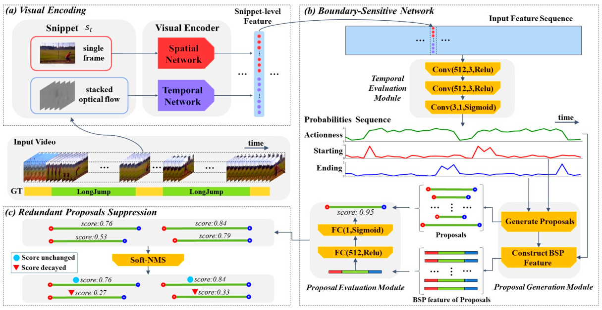

摘要
本文介绍了时序动作定位（Temporal Action Localization）的相关技术、基准数据集和评价指标。此外，从完全监督学习和弱监督学习两个方面，总结了时序动作定位。列举了部分代表性工作并比较了他们的性能。最后，还提出了可能的研究方向。
I 引言
视频理解（video understanding）五大任务：
a) Untrimmed Video Classification
未分割视频的分类
b) Trimmed Action Recognition
已分割视频的动作识别（一个视频只包含一种动作）
c) Temporal Action Proposals
长视频动作分割（使各segment仅含一个动作）
d) Temporal Action Localization
时序动作定位
e) Dense-Captioning Events in Videos
视频中多种动作的描述
时序动作定位（Temporal Action Localization）的任务包括：
- 识别（recognition）
- 定位（localization）
视频定位比起图片定位的难点：
- 视频包含时序信息
- 视频动作的边界不清晰
- 时序跨度大
- 存在多尺度、多目标、镜头抖动
该技术的应用：
视频内容概括、监控、技巧评估、公共安全。
II 相关技术
2014以前：传统方法；2014以后：深度学习
A 传统方法
特征提取：局部的、全局的。
基于特征点跟踪的特征提取方法
- 检测特征点（feature points）
- 逐帧跟踪特征点
- 形成轨迹
- 描述轨迹及其时序
典型方法：
DT（Dense Trajectories， 强轨迹）-> iDT（improved DT）
如今多将DL方法与iDT结合。
B 深度学习（DL）方法
分为两阶段（two-stage）方法和一阶段（one-stage）方法。
前人方法回顾：
2D-CNN
two-stream CNNs
3D CNN
I3D(Inception 3D)
RNN
TSN
1） 两阶段（two-stage）方法（主流）
- 提取temporal proposals（难点）
- 将其分类以及回归操作
第一步是难点，所以各种方法也都是针对第一步来提出。评估其性能的方法：AR（Average Recall）。
a 滑窗法 SLIDING WINDOW (S-CNN [14], 2016)

S-CNN：固定一定大小的滑动窗口来生成不同大小的视频片段，然后通过多级网络(SegmentCNN)对其进行处理。
SCNN包括三个使用C3D网络的子网络：
- proposal网络。确定当前划分的视频片段（segment）是一个动作（action）的可能性。
- 分类网络。对视频片段进行分类。
- 定位网络。其输出是分类的概率。
理论上，窗口滑动的重叠度越高，效果越好，但是计算量也大。所以用非极大值抑制（non-maximized suppression, NMS）去除重叠段。
缺点：滑窗法不能处理不同长度的视频动作；密集的滑窗计算量太大。
b 时序动作组合 TEMPORAL ACTIONNESS GROUPING (TAG [15], 2017)

滑窗法不能处理不同长度的视频动作。
2017年，Y. Xiong等人提出了一个框架，可以精确划分可变视频的动作边界。该框架分为2步：
- 生成一系列时序proposals。
- 判断这些候选是否是一个动作，并预测动作的类别。
为了生成一个proposal，提出了TAG网络。TAG网络分为3步：
- 提取片段（snippets）：每个snippet包含一个视频帧和光流（ optical flow）信息；snippet是均匀获取的；用TSN的稀疏采样方法采样。
动作判断（Actionness）：给snippet打分，确定每个snippet是否含有任何动作。用到二分类网络TSN（Temporal Segment Network）。
组合（Grouping）：依据输出的snippets序列的概率，对高概率的连续snippets进行组合，同时设置多组阈值来删除低概率的snippets。
优点：对边界的处理更灵活；减少了proposal数目，减少计算量；合并片段是自底向上的，更加精确；设置多个阈值组合，可以不需改变参数的训练。
缺点：分类错误的话，会错过一些proposal。
本文在THUMOS2014上IOU=0.5时候MAP=28.25。
c 时序单元回归网络 TEMPORAL UNIT REGRESS NETWORK (TURN TAP [16], 2017)
由Gao J.Y.等人在2017年提出。

该方法将视频分成固定大小的单元（unit），例如16帧为一单元。然后将每个单元放入C3D中提取水平特征。相邻单元构成一个片段（clip），并让每个单元作为锚定单元（anchor unit）构成片段金字塔，然后在单元上执行时序坐标回归。
网络包含两个输出：
- 确定片段（clip）是否包含动作的置信度
- 调整时序坐标边界的偏移量
该方法的贡献：
- 一种利用坐标回归生成时序proposal片段的新方法。
- 快（800fps）。
- 提出了一种新的评价指标AR-F。
d 边界敏感网络 BOUNDARY SENSITIVE NETWORK (BSN [21], 2018)
原作者解读：[ECCV 2018] 用于时序动作提名生成的边界敏感网络 - 知乎 (zhihu.com)

高质量的时序动作候选（proposals）应该具有以下几个特点：
a)灵活的时序长度；
b)精确的时序边界；
c)可靠的置信度分数。
事实上，想同时在这3个方面做的好是很难的。为此，T. Lin（林天威）等人在2018年提出了BSN。
BSN步骤：
- 首先确定时序动作片段的边界，并将其此片段直接作为proposal。
- 对每个候选proposal，基于动作序列的置信度，提取32维的proposal级别的特征。
- 最后，根据所提取的这些特征，评估这些proposal的置信度。
优点：
- 框架：提出了一种全新的且非常有效的时序提名生成框架，能够产生满足(1)时长灵活(2)边界准确(3)评分可靠的时序动作提名；
- 灵活性：BSN方法的模块非常简单且灵活，能够灵活地应用于不同的垂类场景。
缺点：
- 效率不够高：提名特征提取以及置信度评估的过程是对每个时序提名逐个进行的，虽然可以在一定程度上做并行加速，但总体上还是效率比较差；
- 语义信息丰富性不足：为了保证提名特征提取过程的效率，BSN中所设计的32维提名特征是比较简单的，但也限制了置信度评估模块从特征中获得更加丰富的语义信息；
- 多阶段：BSN方法是一个多阶段的方法，没有将几部分网络联合优化。
e 边界匹配网络 BOUNDARY-MATCHING NETWORK (BMN [72], 2019)
原作者解读：[ICCV 2019][时序动作提名] 边界匹配网络详解 - 知乎 (zhihu.com)
为了解决BSN的不足所提出。
BMN网络能够同时生成与BSN中类似的一维边界概率序列，以及二维的BM置信度图来密集的评估所有可能存在的时序提名的置信度分数。
2） 一阶段（one-stage）方法
这种方法同时处理proposal和分类。
SSAD（single shot temporal action detection，单镜头时序动作检测）
结合了在目标检测中的YOLO和SSD模型的特性。
其流程如下：利用预训练模型，得到特征序列作为SSAD模型的输入。经过处理后，模型输出检测结果。
用C3D提取特征。
SS-TAD（end-to-end, single-stream temporal action detection，端到端，单流时序动作检测）
利用时序动作定位的语义子任务作为调整后的语义约束（semantic constraints）来提高训练和测试性能。
效率上比SSAD更好。
用C3D提取特征。
GTAN（Gaussian Temporal Awareness Networks，高斯时序感知网络）
引入高斯核函数（Gaussian kernels），动态优化每个动作proposal的时序范围。
III 基准数据集
最火的是THUMOS14和ActivityNet。
A. THUMOS’14
B. ActivityNet
C. MEXaction2
D. MUTITHUMOS
E. CHARADES
F. AVA
IV 评价指标
平均召回Average Recall (AR)
平均精度Meam Average Precision (mAP)
通常比较的是t-IoU=0.5时的mAP。
V 发展近况
完全监督的时序动作定位（F-TAL，FULL Y-SUPETVISED TEMPORAL ACTION LOCALIZATION）
完全监督：每个训练集都有相应的标签。
弱监督的时序动作定位（W-TAL，WEAKLY-SUPETVISED TEMPORAL ACTION LOCALIZATION）
弱监督：
- 不完全监督（Incomplete supervised）：仅一部分训练集含有标签。
- 不精确监督（Inexact supervised）：训练集只有粗粒度的标签。
- 不正确监督（Inaccurate supervised）：标签可能有错误。
对于弱监督的时序动作定位，只有视频级的标签（没有帧级别的），所以属于第二类。
VI 未来方向
- 同时提高精度和效率。这是一对矛盾。
- 从一维的时序动作检测转向二维的时空动作检测。
- 在线视频的动作检测。
- 弱监督的W-TAL会更加流行，因为这在现实中更普遍。
- 由于视频包含图像和音频，也许能借助音频来辅助时序动作定位。